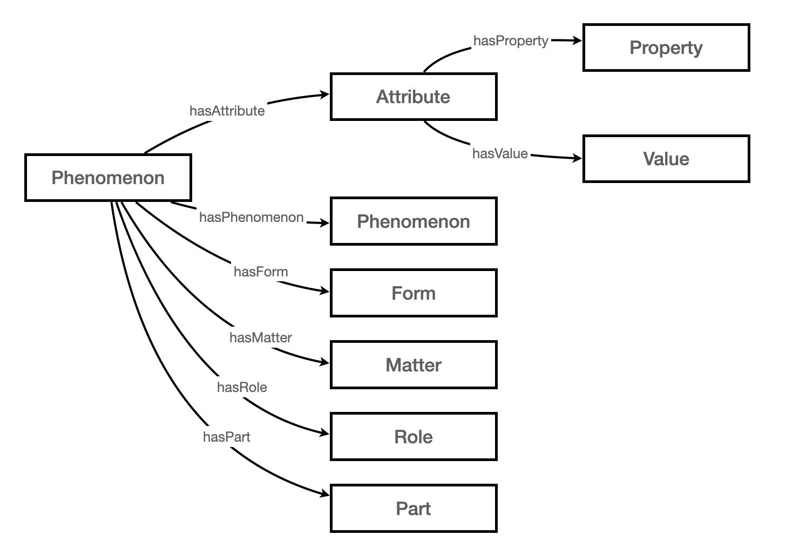
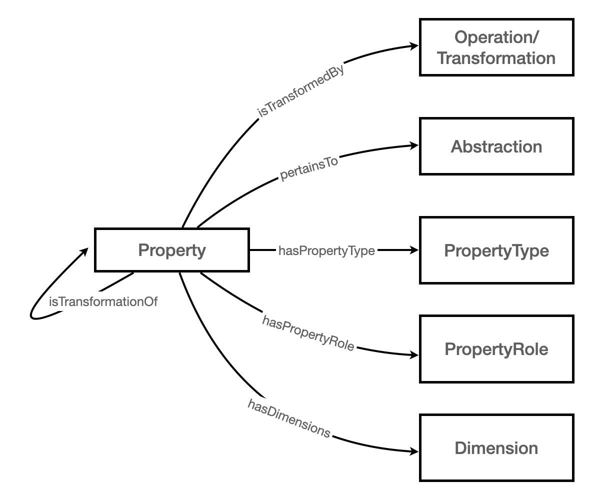

Scientific Variables Ontology v2.0 Documentation
Overview
The Scientific Variables Ontology (SVO) is a framework for representing scientific variables in machine-readable form for use in automated computational scientific workflows. The framework enables modular, principled expression, manipulation, and creation of scientific variable concepts by providing:
- an upper ontology that defines the elementary concept categories, such as Property, Phenomenon or Process, that are used to build scientific variables;
- a set of design patterns for combining elementary classes to create more complex concepts and custom variables;
- a set of rules for inferring relationships between atomistic components of complex variables;
- an extensible lower ontology that contains the domain-specific instances of the classes defined in the upper ontology;
- a tool for searching existing variables using freeform text;
- a tool for comparing existing variables and determining whether they are compatible; and
- a tool for guiding creation of new variables from freeform text.
Introduction
The Scientific Variables Ontology was motivated by the need to align scientific data and scientific software model inputs and outputs. In order to automate the process of determining whether a particular dataset is suitable as an input to a model, or whether a model output is appropriate to use as the input to another model, the semantics of the scientific variables transferred from one resource to another must be represented in a machine-readable way.
The Scientific Variables Ontology enables the decomposition of a natural language description of a scientific variable into a structured, principled, machine-readable representation. The top-level classes or categories in SVO provide a means for classifying the primary terms, or entities, of a variable description. The design patterns provide a means for linking these terms together to create explicit variable descriptions that identify the role of each entity within the variable's perspective.
Components
Core Classes
The following classes are the core classes of SVO. Every scientific variable representation will contain an instance of each of these classes:
Phenomenon
anything (concrete) that can be or is observed to exist or happen in the physical universe and that has an independent existence
Examples include: 'Chaetognatha organism', 'deforestation', and 'a sedimentary rock'
Notes
Phenomena are independent entities and only require the physical universe to exist. They are the starting building block for creating Scientific Variable representations. The Phenomenon class represents 4-dimensional entities and includes both (seemingly) static and dynamic phenomena. Dynamic phenomena are perceived to
Property
any characteristic or quality of a Phenomenon
Examples include: 'shape', 'volume flux', and 'leaf area index'
Notes
Instances of this class are the characteristics themselves and do not include the values that those characteristics may take. In order to couple a Property with a value or a set of values, the Attribute class is provided. A Property may be coupled with a Phenomenon to create a Scientific Variable identifier which can be used to point to values provided in an external resource. Attributes are used to identify Property-value pairs for values that are stored (and thus searchable) within the ontology itself.
Scientific Variable
an identifier for a Property-Phenomenon pairing that indicates a unique physical system and/or abstraction of a physical system and a corresponding characteristic of interest
Examples include: 'temperature of air at the top of Earth's atmosphere', 'absorptance of longwave radiation by the ocean surface', and 'turbidity of water in a lake'
Notes
The Phenomenon a Scientific Variable points to may comprise a combination of Phenomena representations linked with the Context and Reference design patterns, as necessary, to build out a unique, observer-perspective representation of the entire complex Phenomenon (physical system) which is the object of study. The Scientific Variable identifier allows faceted construction of custom variables.
To learn how to create a scientific variable with the entities in this section, see Design Patterns.
"Intra"-Phenomenon Classes
Intra-Phenomenon classes can be used to further specify a distinct phenomenon by attaching attributes to it. "Intra" phenomenon components are those components that are used within a Phenomenon to define it precisely. "Inter"-phenomenon components (described in the next section) link distinct Phenomena together to combine them and create more complex phenomena (which result in bundles that are distinct at a higher level of granularity).
Attribute
a construct for attaching a Property and associated value(s) to a Phenomenon to specify a Phenomenon's state
Notes
A value is the numerical amount (a magnitude, quantity, or number) or categorical label identifying the state of a property. Values are not a class.
Attributes may also be attached to other Attributes to further specify those Attributes.
SVO provides shortcuts for some commonly occurring attributes:
Form
an attribute that identifies the spatial extent (shape) of a Phenomenon to determine the boundaries and the amount of matter encompassed by that Phenomenon
Examples include: molecule, grain, layer
Notes
A form can be continuous (a single distinct entity) or discontinuous (a grouping of entities).
Matter
an attribute that identifies the substance, essence, or stuff of which a Phenomenon is made
Examples include: chlorine, carbohydrates
Part
an attribute that identifies a generic component of a whole Phenomenon
Examples include: bottom, center
Notes
There is a fuzzy line between specifying a Phenomenon Part versus creating a part with the Context design pattern. The current convention is to use the Attribute relation for parts that are so generic, it is unclear what they are unless they are accompanied by the Phenomenon to which they belong. There is not an exact method for determining which parts are too generic to specify with the Context pattern; this is the subject of ongoing deliberation in SVO. For the moment, SVO supplies a list of Parts and recommends that any entity not in this class that is a Part should be linked with the Context pattern.
Role
an attribute that identifies the behavior, usage, or tendency of a Phenomenon indicating action rather than substance or form
Examples include: crop, outlet
Notes
A Role indicates that the Phenomenon acts as a Participant in
There are two more intra-Phenomenon classes. These specify Attributes of a dynamic phenomenon that involves a Process.
Process
an act or activity in which a phenomenon participates that changes the state of that phenomenon
Trajectory
an attribute pertaining to a Phenomenon involving a Process that describes the spatiotemporal evolution of the Process
In addition to a Trajectory, a Process Phenomenon may also have a Part.
To learn how to specify a static or dynamic Phenomenon more precisely using Attributes, see Design Patterns.
"Inter"-Phenomenon Classes
Inter-Phenomenon classes can be used to link distinct phenomena together and create more complex Phenomenon systems (also Phenomena, but at a higher level of granularity). These classes are part of the design patterns that allow the nested hierarchy of Phenomena and the assignment of roles to Phenomena, from the perspective of an observer with an interest in a particular Scientific Variable.
Participant
a construct that links a Phenomenon with a ParticipantRole and/or a VariableRole
Notes
Processes may involve multiple participants. The ParticipantRole is independent of the Variable perspective, while the VariableRole identifies how the Phenomena are related to the Variable Property.
Additional constructs are provided for linking Context Phenomena to the main focus of a Scientific Variable:
Context
a construct that creates a link between two phenomena to indicate that one phenomenon provides context to the other phenomenon, from the perspective of an identified Scientific Variable
And for providing reference for a Scientific Variable,
Reference
a construct that creates a link between two variables to indicate that the value of one variable provides a reference for the assessment of the value of the second variable
To learn how to apply the Participant, Context, and Reference classes to create complex Phenomena, see Design Patterns.
Abstract class
This class is an alternate representation of the Phenomenon class. It exists in parallel to Phenomena in the physical world.
Abstraction
a mathematical representation of a Phenomenon
Notes
Some abstractions, though based in a physical phenomenon, may refer to phenomena that cannot be readily perceived or observed or may be unknown. Abstractions include temporal evolution models and static geometric shapes. In general, a quantitative Property is associated with a mathematical Abstraction.
Design Patterns
Scientific Variable Constructor
A Scientific Variable has two required components: a Phenomenon and a Property. If the Property is evaluated with respect to a reference, a Reference is required as well. The properties provided to create a Scientific Variable are describesPhenomenon, describesProperty, and isDefinedWithRespectTo.

Notes
A Phenomenon may be complex and contain multiple Phenomena with different roles. Rules are provided to unpack complex Phenomena and create direct links between the Scientific Variable and all component Phenomena.
Intra-Phenomenon Constructors
Although Phenomena are not explicitly divided into static and dyamic, there are separate design patterns for representing each type.
"Static" Phenomenon Constructor
Static Phenomena are "bodies" and their features are specified with Attributes. A few relationships for commonly occuring attributes have been provided: hasForm, hasMatter, hasRole, and hasPart.
Notes
The hasPhenomenon property is used to link an unmodified Phenomenon to a modified Phenomenon.
"Dynamic" Phenomenon Constructor
Dynamic Phenomena involve "bodies" or Participants and Processes. Additionally, the object of observation may be the trajectory of a Process Phenomenon, so this may be specified as well.
Notes
There is ongoing deliberation on whether to provide a design pattern for grouping together the Phenomenon—Trajectory—Part information as these entities form a triplet relationship.
Complex Phenomenon Constructors
A Phenomenon may be composed of multiple Phenomena that need to be explicitly identified for a complete description of the Variable. The Context and Participant provide simple design patterns for creating nested and branched Phenomenon sequence representations.
Context Constructor
The Context class links two Phenomena together and provides spatiotemporal context between them. Examples include 'next to', 'before', and 'in'.
Notes
The Context design pattern may specify temporal context, spatial context, or both.
Participant Constructor
The Participant class links a Phenomenon participating in a Process to its contained Phenomenon and a ParticipantRole and/or a VariableRole.

Notes
The Participant design pattern may be used solely to apply a VariableRole, even if there is no associated Process or ParticipantRole within the Phenomenon. These Variable Roles are usually "static" roles, such as 'medium' or 'denominator'.
Variable Reference Constructor
Some Variable Properies are evaluated with respect to a Reference. In these cases, a Reference may be attached to the Scientific Variable.

Notes
As with other design patterns, the Reference design pattern is provided for clarity. It is not mandatory to decompose the reference information. In some instances it may be tedious to decompose the reference or only one component may be expressed explicitly.
Phenomenon—Abstraction Relationship
An Abstraction 'abstracts' a Phenomenon, while a Phenomenon 'isAbstractedBy' an Abstraction.
Notes
The 'abstracts' relationship denotes an exact mapping, while the 'isAbstractedBy' relationship could be an exact mapping or it could be an approximation.
Property Associations
A Property has Dimensions, such as 'length', and a PropertyType, such as 'vector'. A Quantifiable Property can be transformed by a Mathematical Operation; such properties are the transformations of other properties. A Quantifiable Property may also be associated with an Abstraction and may further play a role in that Abstraction, such as 'exponent' or 'parameter'.
Notes
There is ongoing deliberation on whether to provide a design pattern for grouping together the Property—Abstraction—PropertyRole information as well as the Property—Operation—(Transformed)Property.